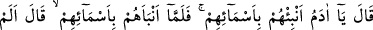
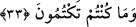

“Bilmiyorum demek, ilmin yarısıdır” denilmiştir. Ebû Yûsuf’a bir mesele sorulmuş
o da “bilmiyorum” deyince; Soranlar:
“- Her gün beytü’l-mâldan şu kadar para alıyorsun, sonra da bilmiyorum,” diyorsun
dediler. Onlara şöyle cevap verdi:
“- Ben sadece ilmim miktarınca ücret alıyorum, eğer cehâletim miktarınca alacak
olsaydım dünyânın bütün malları yetmezdi.”
Hikâye olunduğuna göre bir âlime minberde iken bir mesele soruldu. O da
“bilmiyorum” dedi. “Minber câhillerin yeri değildir” denilince o: “Ben ilmim kadar,
yükseldim, eğer cehâletim miktarınca yükselseydim semâya ulaşırdım.” dedi.
33. (Bunun üzerine:) Ey Âdem! Eşyânın isimlerini meleklere anlat, dedi. Âdem
onların isimlerini onlara anlatınca: Ben size, muhakkak semâvât ve arzda
görülmeyenleri (oralardaki sırları) bilirim. Bundan da öte, gizli ve açık yapmakta
olduklarınızı da bilirim, dememiş miydim? dedi.
Bir rivâyete göre Âdem (a.s.)’a bir minber üzerine çıkarak, huzûrundaki meleklere
isimleri öğretmesi emredildi. O da her şeyin anlamını önünde oturmakta bulunan
meleklere anlattı.
Bunun üzerine Allah Teâlâ: “Ben size göklerin ve yerin gaybıyla sizin açığa
vurduklarınızı ve gizlediklerinizi bilirim, demedim mi?” buyurdu. Âyetteki soru ikrâr
içindir. Hak Teâlâ buyurmaktadır ki: “Sizin göklerde ve yerde ulaşamayacağınız sırları
ancak ben bilirim.” Meleklerin açığa vurdukları: “Ya Rabbi yeryüzünde fesâd çıkaracak
birini mi halîfe yapıyorsun?” sözüdür. Gizledikleri ise “Allah’ın kendine meleklerden
daha sevgili bir varlık yaratmayacağı” zannıdır.
Âyetin bu kısmı, iki âyet önce geçen “Şüphesiz ben sizin bilmediklerinizi bilirim”
âyetine dikkat çekmektedir. Allah, azametine delîl olması için bu âyeti daha kapsamlı
bir biçimde getirmiştir. Çünkü meleklerin gökler ve yeryüzü hakkında gizli ve açık
olarak bildiği her şey O’na mâlûm olduğu gibi, onların bilmedikleri de mâlûmdur. Âyet;
hakîkatların kendilerine açıklanmasını beklemek yerine -ki bu onlar için daha iyidir-
soru sordukları için melekleri azarlamaktadır. Âyetin işâret ettiği diğer noktalar da
şunlardır:
1. İnsan, şerefli bir varlıktır.
2. İlim, ibâdetten üstündür. Zira meleklerin ibâdeti Âdem (a.s.)’ınkinden fazla